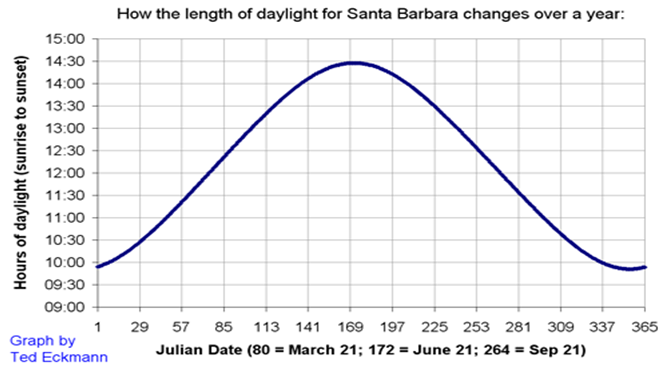
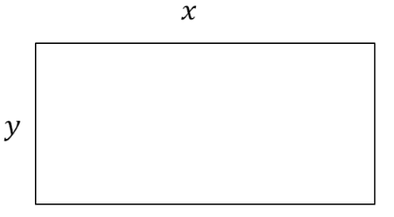
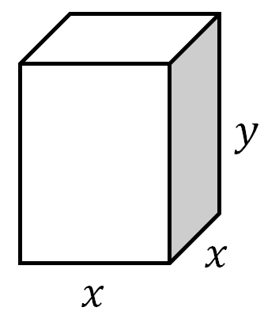
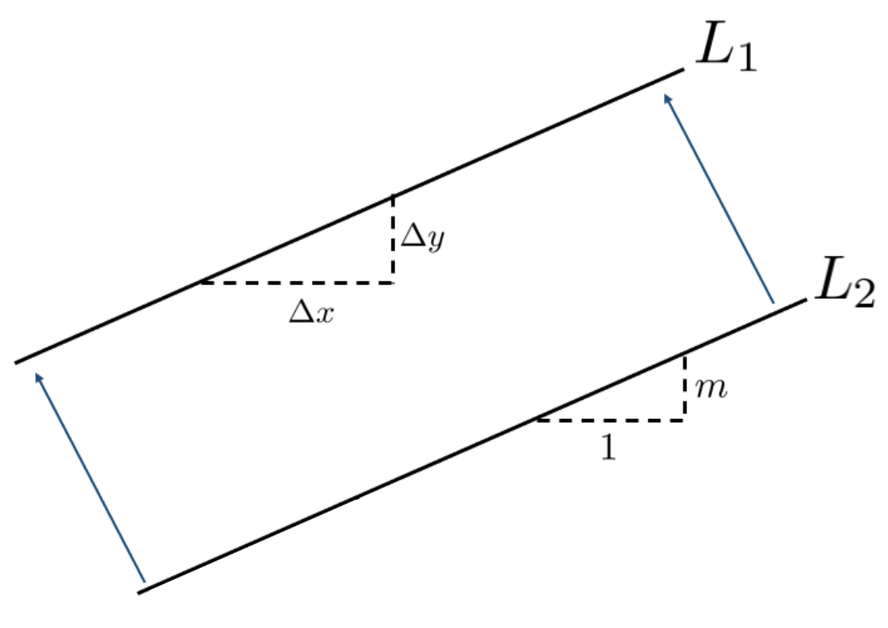
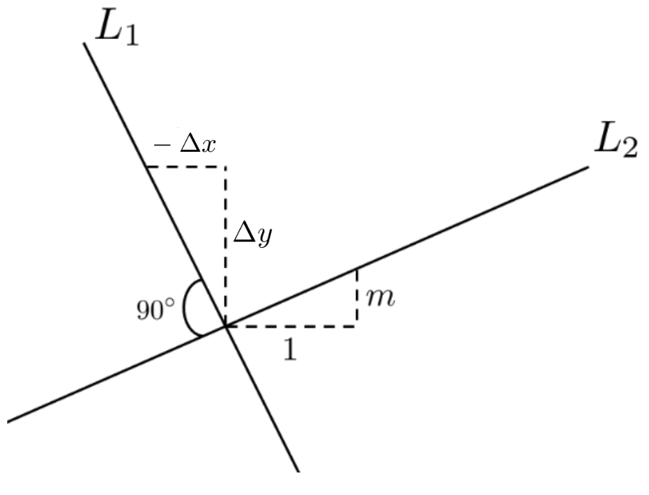
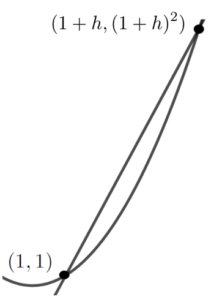

In its simplest form an Optimization Problem can be described as follows: Given that \(y\) depends on \(x\text{,}\) find the value of \(x\) that makes \(y\) as large (or as small) as it can possibly be.
For example, if \(y=x^2-\frac{29}{21}x+\frac{10}{21}\) then \(y\) will be as small as it can possibly be when \(x=\frac{29}{42}\text{.}\) The question is, how did we find \(x=\frac{29}{42}\text{?}\)
One of the mathematicians who developed techniques for solving optimization problems was Pierre de Fermat 14
(1601–1665) who created what has been called the Method of Adequalty. (The Latin root adequāre means to equalize. When something is adequate, then it is equal to the need.) Fermat’s method was based on the simple observation that if the maximum value of \(y\) occurs when \(x\) is equal to say, \(6\text{,}\) then when \(x\) is very near \(6\text{,}\)\(y\) will almost be equal to its maximum value.

You can see this in the graph above. Notice that the maximum number of daylight hours (about \(14.5\)) occurs just after \(169\) days (in fact, at day \(172\)) and that for several days before or after we have about the same number of hours of daylight. This is also true near the minimum which occurs at day \(356\text{.}\) Regardless of what the variables represent if the graph of a function, \(f(x)\text{,}\) is continuous then \(f(x+h)\approx f(x)\) near a maximum or minimum: as long as \(h\) is not too big.
Fermat’s simple idea was to purposely make the mistake of setting \(f(x+h)\) actually equal to \(f(x)\text{.}\) He then rearranged the formulas algebraically and at the crucial point he would set \(h=0\) to “make it correct.” An example will make this clearer.
Example3.4.3.
In Example 3.3.4, we showed that out of all rectangles with a fixed perimeter, the one with the largest area is a square. Next we will use Fermat’s Method of Adequality to examine the related question: Out of all rectangles with a fixed area, does a square have the smallest perimeter?
Consider a rectangle whose length is \(x\) and whose width is \(y\text{.}\) The area of the rectangle is given by \(A=xy\) and the perimeter is given by \(P=2x+2y\text{.}\)

The problem is to minimize \(P\) while holding \(A\) constant. More precisely, our objective is to minimize the function \(P=2x+2y\text{,}\) subject to the constraint that the area, \(A=xy\text{,}\) is fixed. First, we will use our constraint \(A=xy\) to eliminate one of the variables and substitute into \(P\text{.}\) Solving for \(y,\) we get \(y=A/x\text{.}\) Then,
Earlier we had made the “mistake” of setting \(P(x+h)=P(x)\) (knowing that this is not true). Now we “make it correct” by setting \(h=0\text{.}\) This gives: \(1=\frac{A}{x^2}, \text{ or } x^2=A. \) Substituting this into \(y=\frac{A}{x},\) we get \(y=\frac{A}{x}=\frac{x^2}{x}=x\text{.}\)
Thus \(P\) is minimum when \(y=x,\) which is to say, when the rectangle is actually a square. A moment’s thought should make it clear that there is no maximum value for \(P\text{.}\)
Fermat’s method is very slick. However it contains an inherent logical flaw. We begin by setting \(P(x+h)\) equal to \(P(x)\text{,}\) even though we know we are making an error. This seems like it might be a flaw but it really isn’t. When we set \(P(x+h)=P(x)\) we are asking, “What happens if they are equal?” The computations leading up to equation (3.3) are the answer to that question.
But notice that we got from equation (3.2) to equation (3.3) by dividing by \(h\text{.}\) But we know that we can only divide by \(h\) if \(h\) is not zero. Fortunately it is clear that \(h\ne0\) since the whole point of introducing \(h\) is for \(x+h\) and \(x\) to be two different values. However, in the final step, after equation (3.3), we took \(h=0\) to “make it correct” but if \(h\) is zero then we couldn’t have divided by \(h\text{.}\) We seem to be chasing our tails. We need for \(h\) to be equal to zero and not be equal to zero at the same time!
This is the logical flaw.
Since we began with the assumption that \(h\neq0\) we can’t just change our minds later. We can’t have both \(h=0\) and \(h\neq0\text{.}\)
Despite this logical flaw, Fermat’s technique does seem to produce the correct answer. So let’s explore it and see what happens.
Problem3.4.4.
Apply Fermat’s Method of Adequality to find all maxima or minima of the following functions. In each case examine a graph of the function to see if Fermat’s Method provides the correct answer.
(a)
\(f(x)=x(100-x)\)
(b)
\(q(x) = x^2-2x+4\)
(c)
\(g(x)=x^4-4x^3+6x^2-4x\)
Problem 3.4.4 shows that Fermat’s method does not indicate whether the computed value of \(x\) is at a maximum or a minimum. Often the context of the problem provides the additional information needed to make that determination. Example 3.4.3 and Problem 3.4.5 both provide such a context.
Problem3.4.5.
Consider a rectangular box with a square base, as seen here.

(a)
Find a formula for the volume, \(V\text{,}\) and the surface area, \(S\text{,}\) of the box.
(b)
Suppose we want to determine which box has the least surface area, given a fixed volume. What is our objective and what is our constraint? Use Fermat’s Method of Adequality to find the dimensions of the box that solves this problem. Is the minimal box a cube?
A few minutes of thought should convince you that what makes Fermat’s method work is the fact that near a maximum or minimum, the curve is practically horizontal. That is, its slope is nearly zero.
Fermat recognized that finding a maximum or minimum by his method was a special case of finding the slope of (the line tangent to) the curve and he modified his method to determine the slope of a curve even when it is not horizontal.
Before we pursue Fermat’s modification, it might be a good time to brush up on some basics regarding the slopes of lines. No doubt you are already familiar with all of the following formulas for the equation of a line:
These formulas are all really just rearrangements of one another. We use three different rearrangements because in different contexts one of them is usually simpler to use than the others. Through most of Calculus you will probably find the Point–Slope version to be the most convenient to use.
Problem3.4.6.
(a)
Use the appropriate formula for the equation of a line to find an equation of each of the following lines:
with slope \(2\) and \(y\)–intercept \((0,7)\)
with slope \(-8\) and \(y\)–intercept \((0,5)\)
with slope \(-2\) and \(x\)–intercept \((7,0)\)
with slope \(5\) and passing through the point \((2,-8)\)
with slope \(-4\) and passing through the point \((6,-1)\)
passing through the points \((2,8)\) and \((4,-2)\)
passing through the points \((4,3)\) and \((2,3)\)
(b)
Show that the Point–Slope formula follows from the fact that the slope of a line can be determined using any two points on the line.
(c)
Show that the Slope–Intercept formula is really a rearrangement of the Point–Slope formula.
(d)
Show that the Point–Slope formula follows from the Two-Point formula.
(e)
What does the two–point formula reduce to if \(y_0=y_1\text{?}\)
What does the two–point formula reduce to if \(x_0=x_1\text{?}\)
Notice that in the two–point formula, as given we need to assume that \(x_0\ne x_1\text{.}\) Can you rearrange the formula so that this is not a problem?
(f)
Show that the equation of the line with \(x\)–intercept \((a,0)\) and \(y\)–intercept \((0,b)\) can be written in the form: \(\frac{x}{a}+\frac{y}{b}=1. \) Notice that this equation is only valid if \(a\ne 0\) and \(b\ne 0\text{.}\)
Determine the equation of the line if \(a=0\text{.}\)
Determine the equation of the line if \(b=0\text{.}\)
Problem3.4.7.
(a)
In the diagram below \(L_1\) is obtained from \(L_2\) by translating (but not rotating) \(L_2\text{,}\) as indicated by the arrows. Use the diagram to show that parallel lines have the same slope.

(b)
In the diagram below we have taken \(L_1\) from the previous figure, and rotated by \(90^\circ\text{.}\) Use this diagram to show that perpendicular lines have slopes that are negative reciprocals of each other.

Problem3.4.8.
Find the equation of the line:
(a)
parallel to \(y=3x-2\) and passing through \((3,-3)\)
(b)
perpendicular to \(y=3x-2\) and passing through \((3,-3)\)
(c)
parallel to \(2x+3y=7\) with \(y\)–intercept \((0,5)\)
(d)
perpendicular to \(2x+3y=7\) and passing through the point \((-1,5)\)
Drill3.4.9.
Find the equations of the two lines such that each one is a perpendicular distance of \(5\) units away from the line \(y=\frac{4}{3} x+2\) and parallel to it.
Now that you’ve had a chance to brush up on slopes, let’s see how Fermat modified his method to determine the slope of a curve. We will start by determining the slope of the graph of \(y=x^2\) at the point \((1,1)\text{.}\)
We need two points to determine the slope of a line, so with Fermat’s method in mind, we choose another point on the curve \(y=x^2\) very close to \((1,1)\text{.}\) Since we don’t really care which point we take as long as it is close to \((1,1)\) we introduce the parameter, \(h,\) which we think of as very small. The points \((1,1)\) and \((1+h,(1+h)^2)\) are thus very close together. This is represented in the sketch below.

The slope of secant line joining \((1,1)\) and \((1+h,(1+h)^2)\) is given by
As before we set \(h=0\text{.}\) Thus the slope of the line tangent to the graph of \(y=x^2\) at \((1,1 )\) is \(2\text{.}\)
Problem3.4.10.
(a)
Use Fermat’s method for tangents to compute the slope of the line tangent to \(y=x^2\) at the generic point \((a,a^2)\text{.}\)
First plot the graph \(y=x^2\text{.}\) Then, on the same set of axes, plot the line through the point \((a,a^2)\text{,}\) and tangent to the graph of \(y=x^2\text{,}\) for each of \(a=-2, -1, 0, 1, 2\text{.}\)
What is the relationship between the slopes at \((a,a^2)\) and \(\left(-a, (-a)^2\right)\text{?}\) Is this consistent with what you see when you plot the graph of \(y=x^2\text{?}\)
(b)
Use Fermat’s method for tangents to compute the slope of the line tangent to \(y=x^3\) at the point \((a,a^3)\text{.}\)
First plot the graph \(y=x^3\text{.}\) Then, on the same set of axes, plot the line through the point \((a,a^3)\text{,}\) and tangent to the graph of \(y=x^3\text{,}\) for each of \(a=-2, -1, 0, 1, 2\text{.}\)You should notice something interesting about the tangent lines at \(\pm1\) and \(\pm2\text{.}\)
What can you say about the tangent lines at \((a,
a^3)\) and \(\left(-a, (-a)^3\right)\text{?}\)
Problem3.4.11.
(a)
Use Fermat’s method to find a formula for the slope of the tangent line to \(y(x)= x^3 +2x^2\) at the point \(\left(a, y(a)\right)\text{.}\) How does this answer compare with the results from Problem 3.4.10?
(b)
What, if anything, would change if we used Fermat’s method to find the slope of the tangent line to \(y(x)=
x^3+2x^2+b\) at the point \(\left(a, y(a)\right)\) where \(b\) is any constant? Use the graph of \(y(x)\) to explain.